| Universal Palettes & Color Blind Configuration |
|
SeaDAS 7.4 adds a preference page to easily configure the default color schemes for color blind compliance.
|
Image 1. The Universal Palette |
|
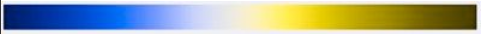 Image 2. Universal Palette (Deuteranope Simulation) |
|
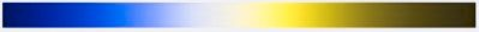 Image 3. Universal Palette (Protanope Simulation) |
|
Image 4. Universal Palette (Tritanope Simulation) |
|
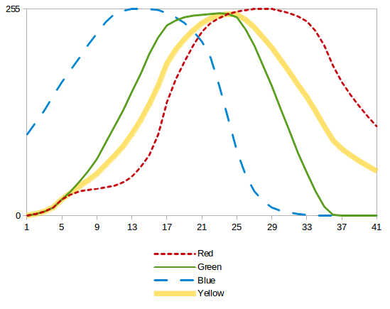 Image 5a. RGB value plot of universal palette |
|
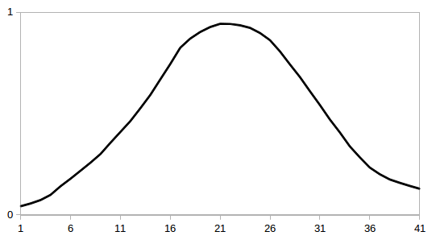 Image 5b. RGB intensity plot of universal palette |
|
Image 6. MODIS Aqua Chlorophyll Scene (using universal palette) |
|
Image 7. Rainbow Palette |
|
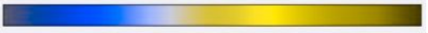 Image 8. Rainbow Palette (Deuteranope Simulation) |
|
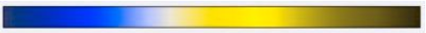 Image 9. Rainbow Palette (Protanope Simulation) |
|
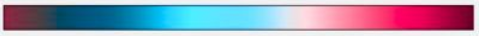 Image 10. Rainbow Palette (Tritanope Simulation) |
|
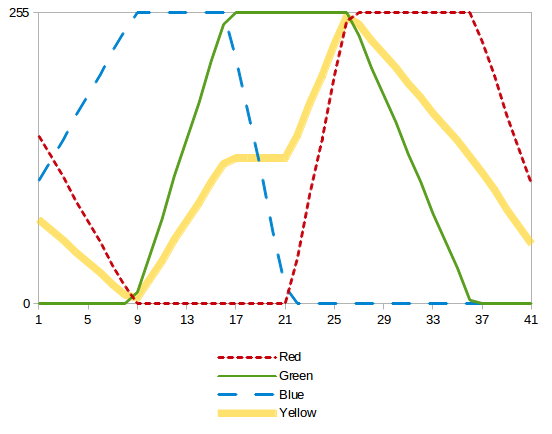 Image 11a. RGB value plot of rainbow palette |
|
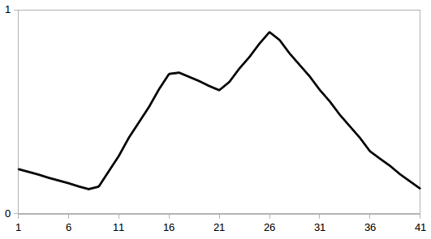 Image 11b. RGB intensity plot of rainbow palette |
|
Image 12. MODIS Aqua Chlorophyll Scene (using rainbow palette) |
Additionally SeaDAS provides 2 color blind compliant anomalies palettes which are essentially derived from the
SeaDAS Standard Universal. These are: file=anomalies1_universal.cpd and file=anomalies2_universal.cpd.
|
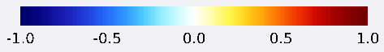 Image 13. SeaDAS Anomalies1 ("Soft") Universal Pallete |
|
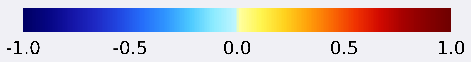 Image 14. SeaDAS Anomalies2 ("Hard") Universal Pallete |
|
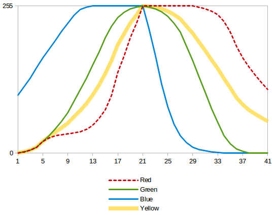 Image 5a. RGB value plot of anomalies1 palette |
|
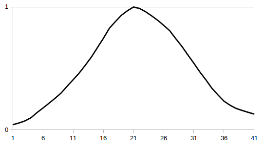 Image 5b. RGB intensity plot of anomalies1 palette |
The following color palette preferences page governs whether the default palette is color blind compliant. The option determintes whether to use the color-blind compliant palette as the default palette. (see color_palette_schemes.txt located in ~/.seadas/beam-ui/auxdata/color-palettes).
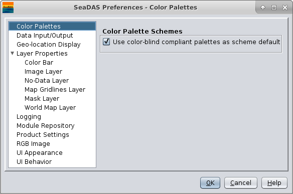